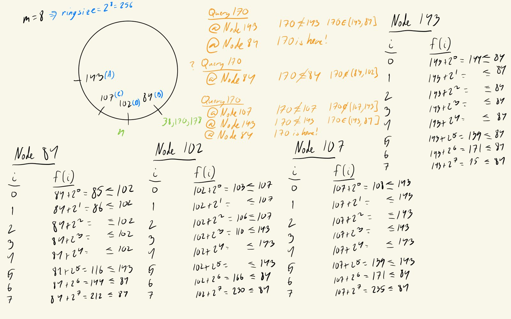
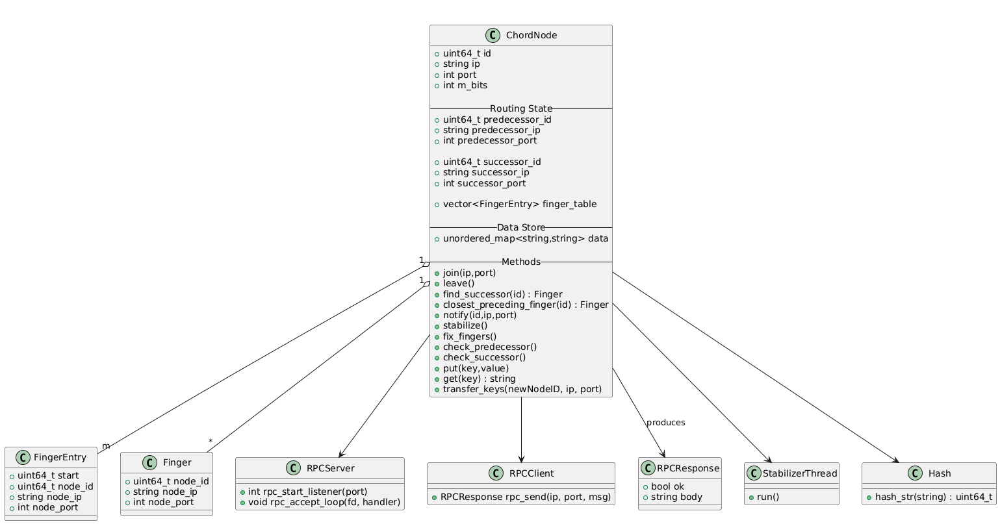
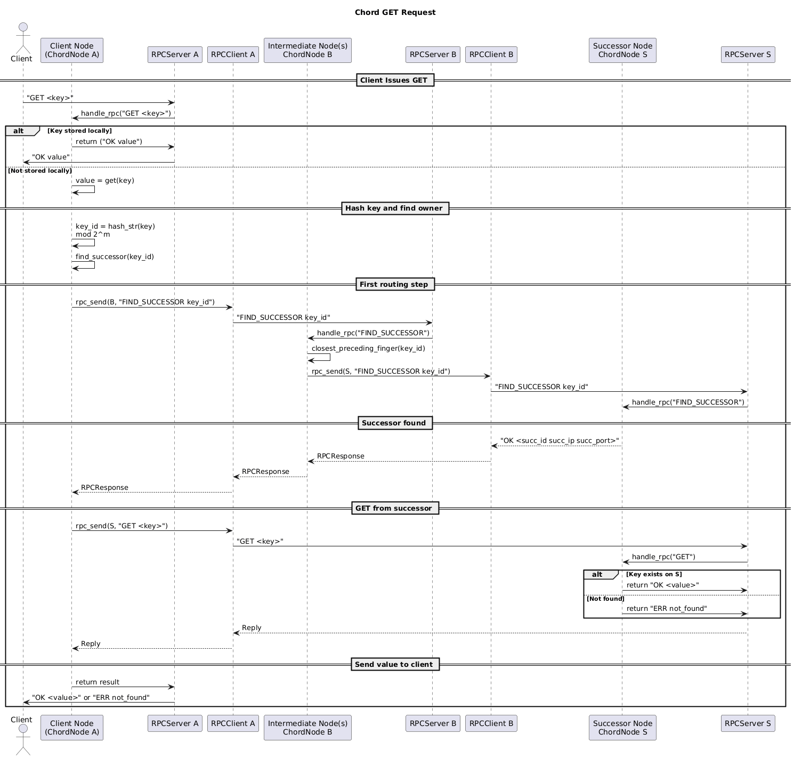
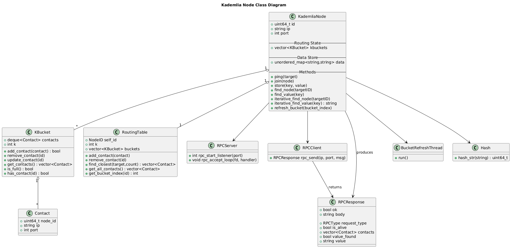
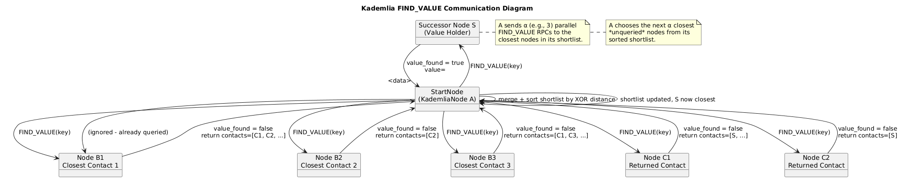
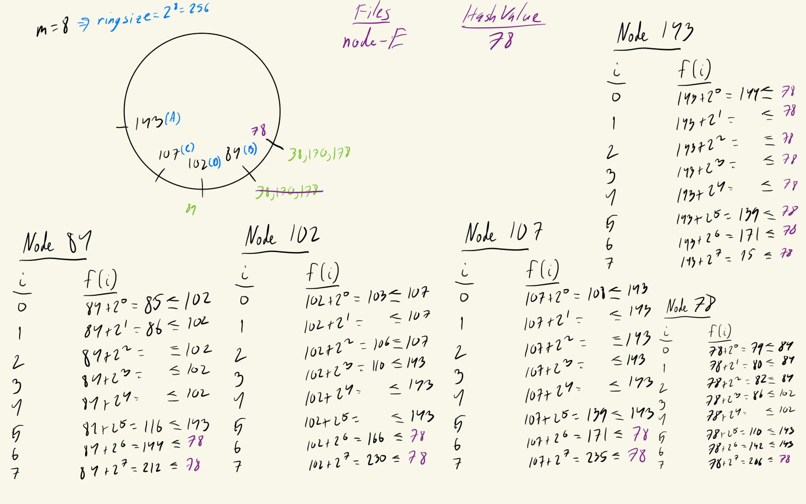
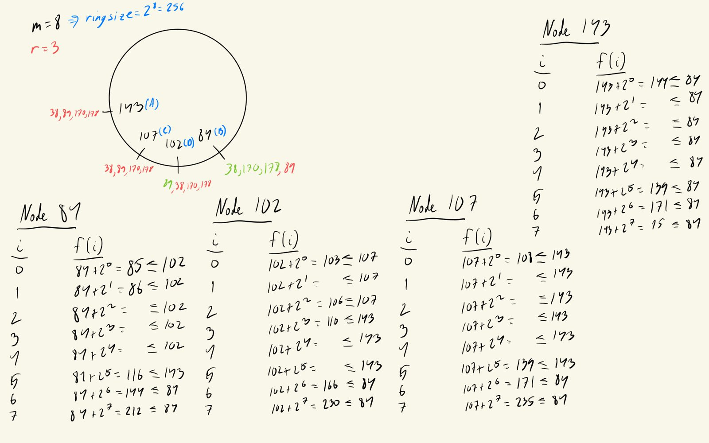
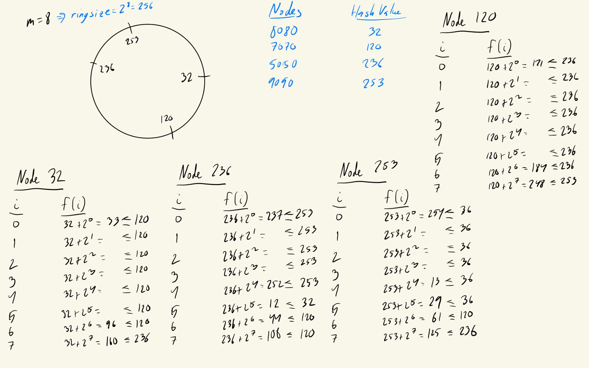
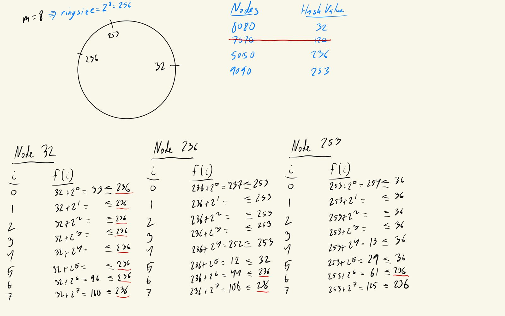

Join
Ask any node for FIND_SUCCESSOR(id), adopt the answer as successor, request TRANSFER_KEYS for the keys in (predecessor, id], then NOTIFY. Stabilization fixes everyone else.
Santa Clara University · CSEN 317 Distributed Systems · Fall 2025
A Chord distributed hash table written from scratch in C++. Every node runs as its own process and talks to the others over TCP. Nodes can join, leave or crash while the ring keeps serving reads and writes. We compared it against Kademlia to see how the two designs trade off scalability, latency and fault tolerance.

Peer-to-peer file sharing started with Napster. Users kept the files on their own machines, but one central server kept the index of who had what. That server was a single point of failure and a bottleneck: when it went down, nobody could find anything.
A distributed hash table removes the central index. Keys and nodes are hashed onto the same ID space, and each node is responsible for one slice of it. Storing every node's location on every node doesn't scale, so the real question is how to route a lookup when each node knows only a few others.
Chord and Kademlia are the two best-known answers. Both promise O(log N) lookups. Daryl and I wanted to see what it takes to build one that holds up when processes actually crash, and how the two designs compare.
Interactive walkthrough
This walkthrough follows the same example as my handwritten notes, and the IDs are real. The page
runs a JavaScript port of the std::hash our C++ code uses, so
node-A lands on 143 here just as it does in the actual program.
Your turn
Store or look up any key, add nodes by name, or crash one and watch its keys pass to the next node. The sandbox always shows the ring after stabilization has caught up. Click a node to see its finger table.
hash("file1.txt") mod 256 = 170
Most of these came out of the research log I kept while building (below). Each choice was weighed against what a two-person, six-week class project could get right.
Daryl started with a single-process simulator that held every node in one program. Extending it
showed the problem quickly: one process is centralized, synchronous and never fails, so
fingers never go stale, joins are never half-finished, and messages never arrive late.
Stabilization has nothing to fix. I rewrote it so each node is a separate OS process
with its own listener socket. Now crashes are real (kill -9) and stabilization
has to earn its keep.
The proposal called for SHA-1. We used C++'s std::hash on ip:port,
mod 2m, because it's fast, needs no extra library, and gives the same result on
every node built with the same toolchain. The cost is that it's compiler-dependent and isn't
cryptographic, which is fine for a closed test network but not for a public one.
We ran with m = 8, so 256 IDs. That's small enough to check finger tables by hand
and to read in logs. It also makes collisions possible, so I wrote find_port.cpp
to find ports whose address hashes to a chosen ID when a test needed a specific layout.
Replicas go on the owner's immediate successors, not on random nodes. Successors are the nodes that inherit the key range when the owner leaves, so the copy is already where it will be needed. The replica set also follows the ring structure without any extra bookkeeping. Losing data would require several consecutive nodes to fail at once.
I kept r constant at 3 instead of scaling it with log N. If each node fails independently with probability 0.15, a key survives with probability 1 − 0.15³ ≈ 0.997. That's high enough, and a fixed r keeps write and stabilization costs predictable. Three is also the default in HDFS, Kafka and Dynamo-style systems.
A PUT updates the owner first, then pushes PUT_REPLICA to the
successors. Strong consistency would need versioning (vector or Lamport clocks) and a
quorum protocol like Dynamo's or Raft's. That wasn't in scope, and it isn't needed for
Chord's baseline guarantees. The trade-off is a short window during churn where a replica
can lag behind. Replication also helps reads: a node checks its own store first, so many
GETs never leave the node.
Every socket has a 1-second send/receive timeout (SO_RCVTIMEO /
SO_SNDTIMEO). Failed calls retry up to 3 times with a growing pause (100, 200,
300 ms). Without timeouts, one crashed node would hang its neighbours' stabilize loops
forever. With them, failures are detected quickly and stay contained, so one slow node can't
stall the ring. The accept loop also handles each connection on its own thread, so a slow
caller doesn't block the others.
Every second each node runs stabilize(), fix_fingers(),
check_predecessor() and check_successor(). I started at 500 ms
and slowed it to 1 s to cut background traffic with up to 100 nodes sharing one laptop.
Stabilization is skipped while a node is in the middle of joining or leaving, so it can't undo
a half-finished change.
The finger table, the successor/predecessor pointers, the successor list and the key-value store each have their own lock. A GET reading the store doesn't block stabilization from rewriting fingers. The hard lesson was a deadlock when a node crashed: stabilize held the finger-table lock while it PINGed fingers that might be dead. Now it copies the table under the lock and makes its RPCs on the copy.
When a node joins, some old replicas fall outside the new replica set. Left alone, the real replication factor creeps above r, storage grows, and old copies can serve outdated values. Recalculating every node's replicas globally costs O(N²·F). Only the neighbourhood of the change actually needs work, which is O(r·Faffected).
This was listed as future work in our December report. I came back to it in June 2026: every
5 seconds, repair_primary_status() re-checks which keys a node actually owns, and
repair_replicas() pushes primaries out again and drops replicas the node
shouldn't hold anymore (should_store_replica() asks the owner for its successor list).
Each chord_sim process is a complete peer: a CLI, an RPC server, a background
stabilizer, and its share of the data. Nodes communicate only through plain-text commands over TCP.
Plain text over TCP, one command per connection, replies start with OK or ERR. You can drive a node with nc:
$ echo "FIND_SUCCESSOR 170" | nc 127.0.0.1 12034 # node 143
OK 84 127.0.0.1 12403
$ echo "GET file1.txt" | nc 127.0.0.1 12403 # node 84
OK contents-1| Group | Commands | Used for |
|---|---|---|
| Routing | FIND_SUCCESSOR GET_SUCCESSOR GET_SUCCESSOR_LIST GET_PREDECESSOR | Lookups, building the successor list, and stabilize() |
| Membership | NOTIFY SET_SUCCESSOR SET_PREDECESSOR TRANSFER_KEYS PING | Join, graceful leave, failure detection |
| Data | PUT PUT_PRIMARY PUT_REPLICA GET | Client writes and reads, key handoff, replication |
| Testing | DOCKER_JOIN DOCKER_PUT DOCKER_GET IS_STABLE GET_METRICS GET_RING GET_FINGERS LIST_KEYS | Letting scripts drive headless nodes and check their state |
Ask any node for FIND_SUCCESSOR(id), adopt the answer as successor, request TRANSFER_KEYS for the keys in (predecessor, id], then NOTIFY. Stabilization fixes everyone else.
Hand every primary key to the successor with PUT_PRIMARY, then link the neighbours directly with SET_PREDECESSOR and SET_SUCCESSOR before exiting.
No goodbye. Neighbours notice when PING times out: check_predecessor() clears the dead pointer, check_successor() moves to the next live finger, and replicas are promoted to primaries.


GET that isn't stored locally.Daryl built the Kademlia side as an in-process simulation with 160-bit IDs, k = 20 contacts per bucket and α = 3 parallel queries. I added a CLI and a metrics runner so the two protocols could be run through the same tests.
| Chord | Kademlia | |
|---|---|---|
| Topology | One-dimensional ring, nodes in ID order | Binary tree of ID prefixes |
| Distance | Clockwise distance (asymmetric) | XOR of IDs (symmetric) |
| Routing table | m fingers at n + 2i | 160 k-buckets of up to k = 20 contacts |
| Lookup | Sequential: forward to the closest preceding finger | Iterative and parallel: query the α = 3 closest contacts not yet asked |
| Hops | O(log N); each finger jump halves the remaining distance | O(log N); each round fixes at least one more bit of the ID |
| Fault tolerance | Successor list, replicas on successors, periodic stabilization | Many contacts per bucket, so a lookup can route around a dead node |
| Weak spot | Routing depends on a few links being correct. Strong stabilization is O(N²). | More state per node, and routes are harder to reason about |
| Our build | Multi-process over TCP, in C++ | Single-process simulation, in C++ |


FIND_VALUE.Our takeaway: both reach O(log N), but Kademlia's parallel queries and redundant buckets make it more forgiving under heavy churn. Chord's simpler structure makes it easier to prove correct and to debug, as long as stabilization keeps up.
run_chord_metrics.sh launches N headless nodes on one machine, joins them into a ring, writes
and reads five keys through random nodes, kills a random node with kill -9, and reads
every key again.
| Ring size | PUT | GET issued 1 s later | Notes |
|---|---|---|---|
| 10 nodes (3 runs) | 9–13 ms (two outliers of 2.0 s and 4.7 s on retries) | 15 / 15 6–13 ms | All five keys survived the crash test. |
| 50 nodes | 7–11 ms (one 2.3 s outlier) | 3 / 5 6–8 ms | Two reads returned not_found. |
| 100 nodes | 7–14 ms | 4 / 5 8–10 ms | One read returned not_found. A separate December run averaged 8.2 ms GET and 8.8 ms PUT. |
FIND_SUCCESSOR fails, the code falls back to the local successor. With stale fingers, that can name the wrong owner. Reads stayed fast, but correctness under rapid churn was the weak spot.stabilize() rounds (IS_STABLE).Each test launches real nodes, checks their state through RPCs, and logs any mismatch.
successor(hash(key)).successor(n + 2i).The script kills a random node with kill -9. All five keys were still readable from the surviving nodes, served by the promoted replicas.
We paused (not killed) one of three CLI nodes. The other two dropped it as predecessor and successor once its PINGs timed out, and the ring stayed connected.
GETs for keys that were never stored route to the correct owner and come back as a clean ERR not_found, not a hang.
While building, I kept a private Discord channel of notes to myself: screenshots of articles and AI answers, open problems, and bugs I was chasing. These are the entries that shaped the code.
Compared topology (ring vs XOR space), distance metric, routing tables and fault tolerance. This became the framing for our proposal: build Chord first, then compare it with Kademlia.
No local check before routing, keys not moved on join, no replication, only clean leaves (no crashes), no latency or churn, no metrics. This became my to-do list.
A centralized, synchronous, failure-free simulator never has stale fingers or half-finished joins. That was the reason to rewrite it with one process per node.
Successors rather than random nodes; r = 3 from 1 − pr survival odds; eventual consistency instead of a quorum. Also noted that local replica repair costs O(r·Faffected) while a global recalculation costs O(N²·F).
After a join, nodes that fall out of a key's replica set should drop their copy. Otherwise the replication factor creeps up and old values linger. This was deferred in December and implemented in June 2026.
Socket timeouts so a misbehaving node can't block stabilization, a short successor list for failover, and treating every response as untrusted until resp.ok is checked.
Slowed the stabilize loop from 500 ms to 1 s to cut background traffic, and added a separate mutex for the successor list, the finger table and the data store.
100 processes, average GET 8.23 ms and PUT 8.82 ms on localhost.
After a crash, the dead node's predecessor hung and its successor took nil as predecessor. The fix was check_successor(): PING the successor and fail over to the next live finger. I also made a new node start with a nil predecessor and itself as successor.
Replication used the successor list, which only fills in after several stable rounds, so a fresh ring had one target. This showed up most when the PUT entered at a node that wasn't the owner. I fixed it by having the owner walk the ring with GET_SUCCESSOR to find its r targets on demand.
Joins handed over primaries, but a node that joined inside another key's replica range got nothing. This was solved later by the periodic repair_replicas().
Daryl and I proposed evaluating scalability and latency in DHTs: build Chord, then Kademlia, then compare them. Our literature review covered Napster, KadRTT, next-generation DHTs (IPFS, Ethereum) and Chord stabilization work like Re-Chord and network scaffolding.
Daryl wrote the first in-memory Chord ring. I extended it with key lookup, stabilization, rebalancing, replication and key transfer on join and leave. That made its limits obvious.
I built the multi-process version: a TCP RPC layer, join and finger tables, PUT/GET, graceful leave, crash handling, replication, mutexes, and a Dockerfile so nodes could run as containers on a shared network.
I added headless mode (AUTORUN, BOOTSTRAP), retries, socket timeouts and the experiment scripts. I also fixed a ring-formation bug and a deadlock on crash. Daryl delivered Kademlia, and I added its simulator CLI and metrics. We presented on Dec 4 and submitted the report on Dec 5.
I upgraded to C++20, added a readline CLI with fingers and successors commands, made the accept loop handle connections concurrently, and stopped stabilization from running during joins and leaves. I also added the primary/replica flag with replica and primary repair, a real stability check for the metrics, and the correctness test suite.
docs/)
Before writing the replication and join code, I worked each step out on paper. The animation above follows these pages.



127.0.0.1:port addresses.